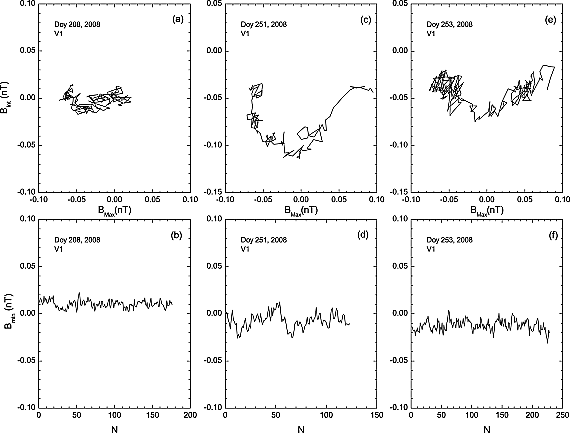
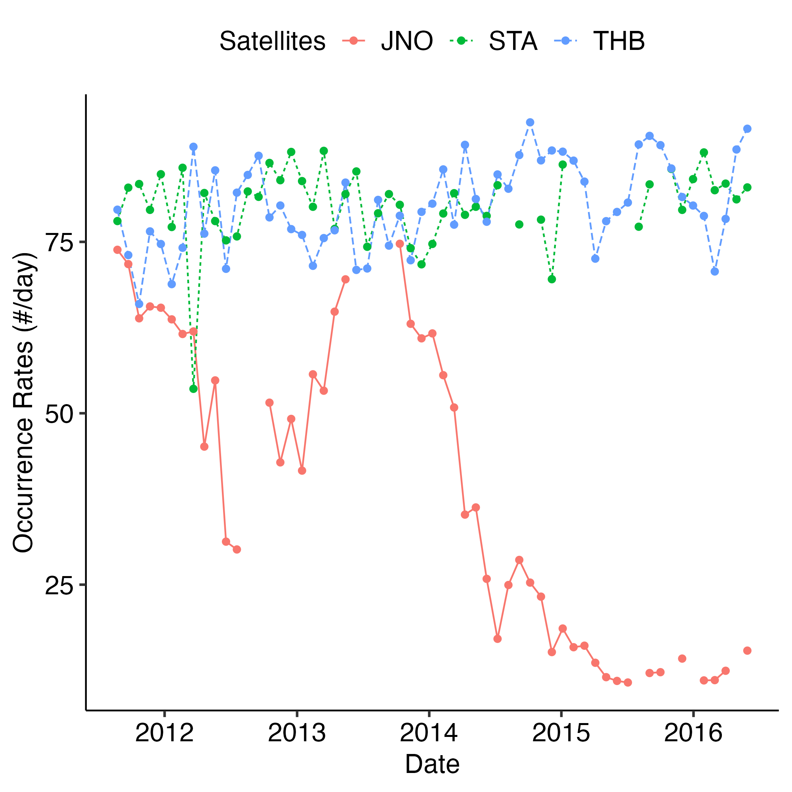
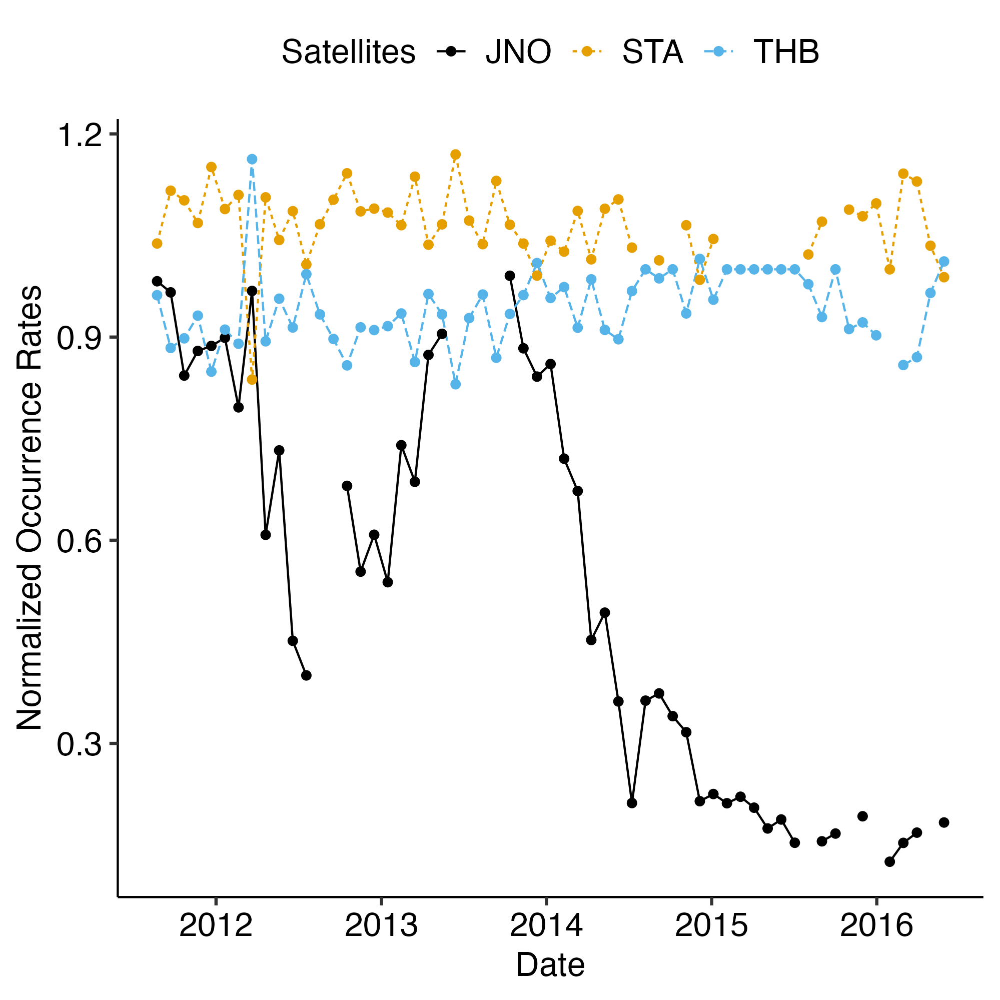
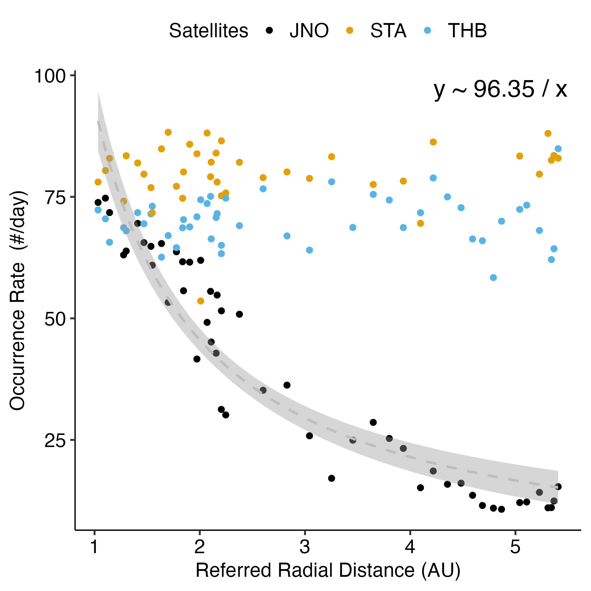
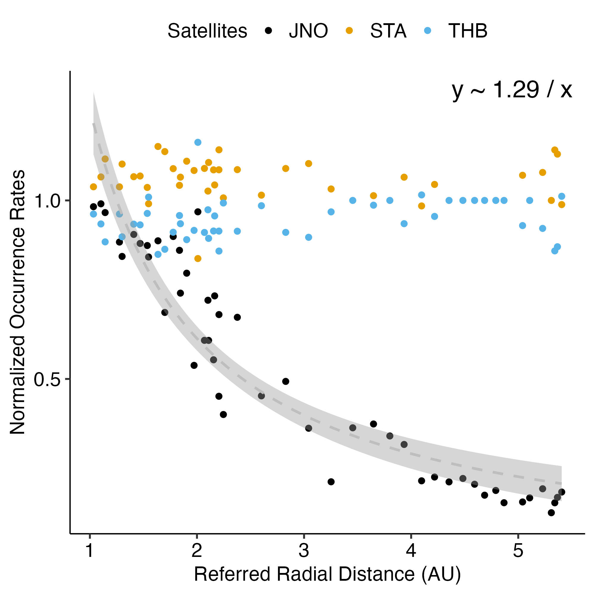
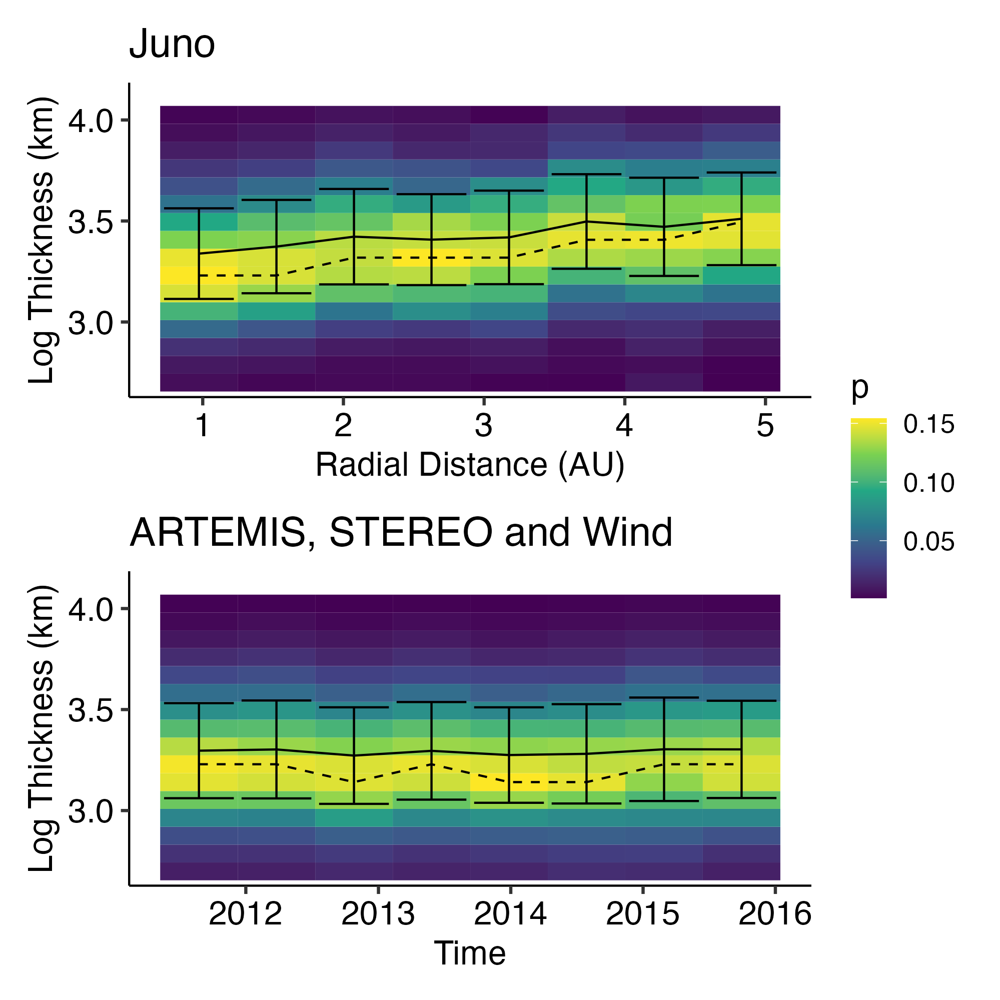
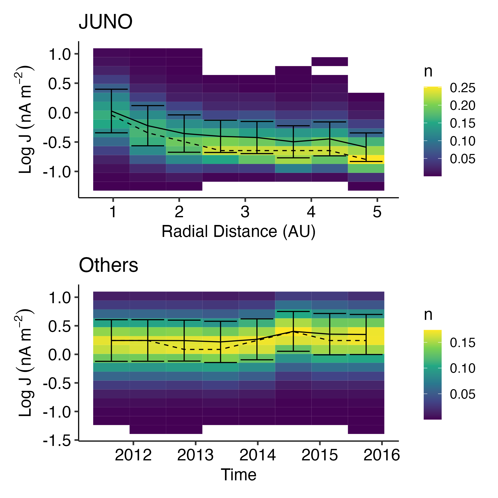
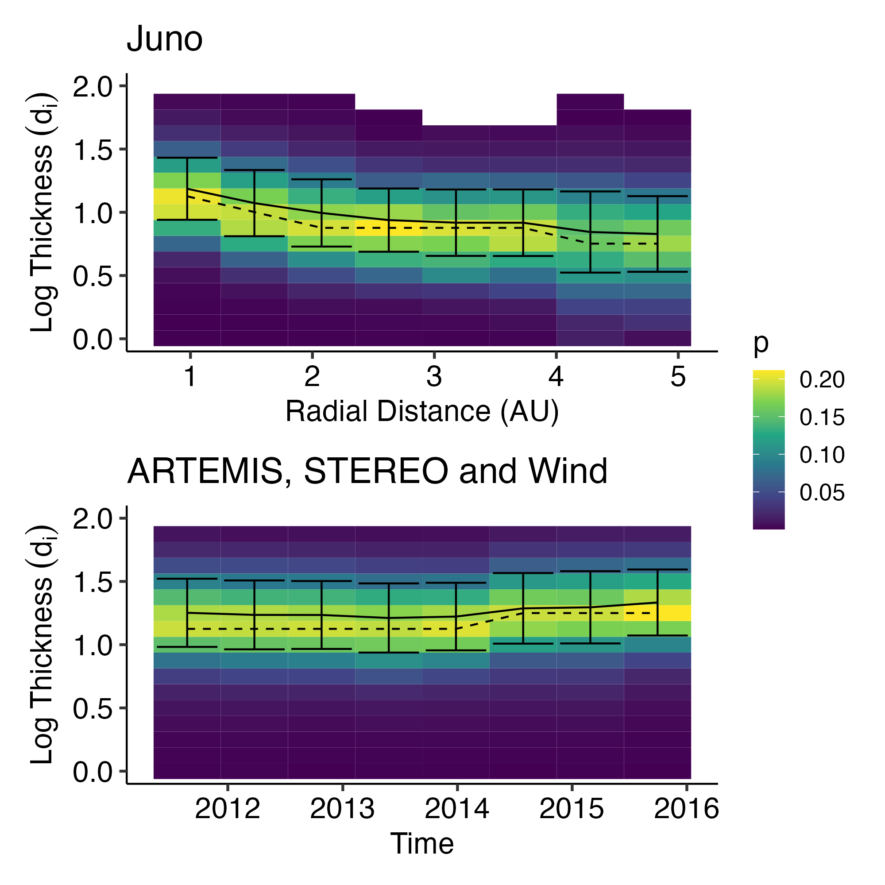
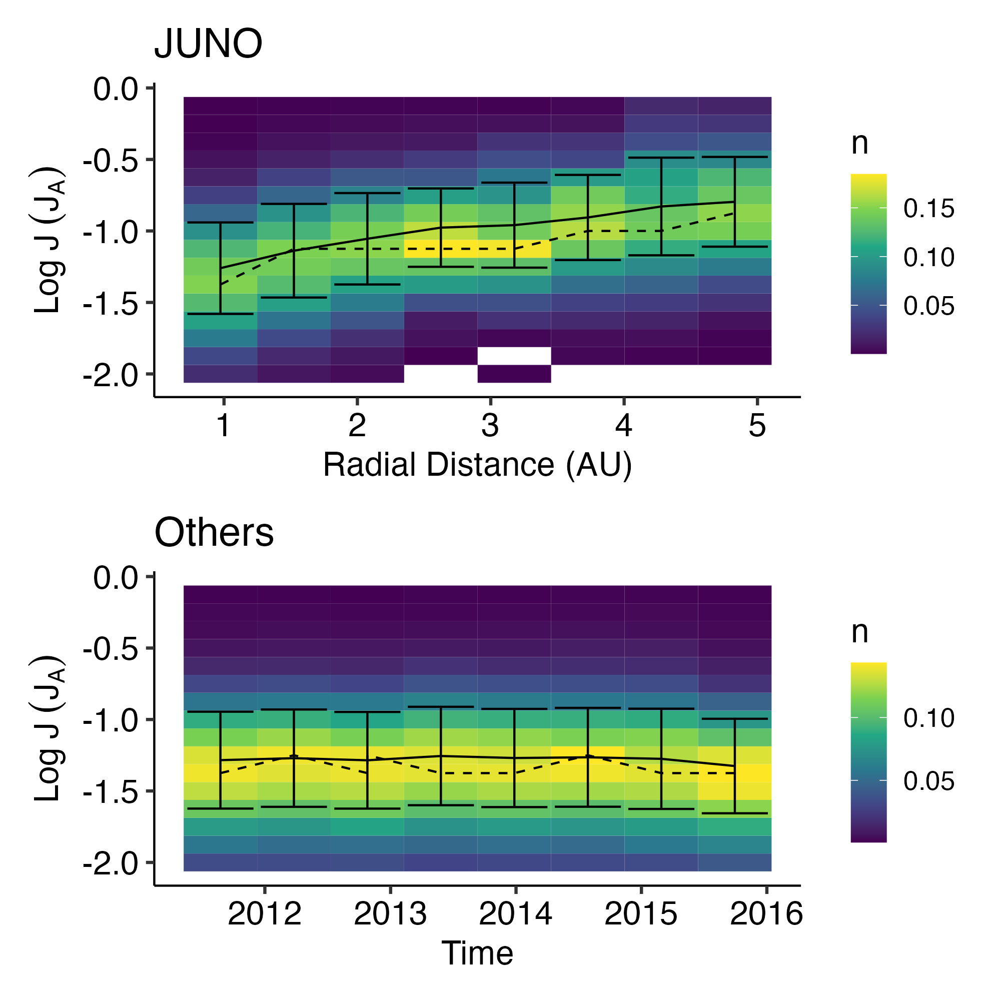

Discontinuities? Yes!
All statistics are wrong, but some may be useful:)
Background
‘Discontinuities’ are discontinuous spatial changes in plasma parameters/characteristics and magnetic fields (Colburn and Sonett 1966).
They are observed across the heliosphere from inner heliosphere (Liu, Fu, Cao, Yu, et al. 2022) to the heliosheath (Burlaga and Ness 2011).

![The properties of a rotational discontinuity (RD) detected at 0.126 AU on 28 January 2020. (a) The magnetic field magnitude and three components in Radial‐Tangential‐Normal (RTN) coordinate system, (b) the magnetic field in local magnetic normal (LMN) coordinate system, (c and d) the proton velocity in RTN and LMN coordinate systems, (e) the proton density, (f) the proton thermal pressure, the magnetic pressure and the sum, (g) the tangential components of the electric field in LMN coordinate system in the RD rest frame, (h) the position, orientation, and motion of the RD, (i–k) the distributions of BL, JM, and J · E across the RD, (l and m) the jump conditions across the RD. In (h), the cyan plane and arrow represent the RD and its motion vector, and the yellow curve shows the PSP orbit. In (j), both the colors and the curve correspond to the values of JM, and two vertical dashed lines indicate the area of |JM|>13max|JM| $\vert {J}_{M}\vert > \frac{1}{3}\text{max}\left(\vert {J}_{M}\vert \right)$ whose width is defined as the half thickness of the discontinuity. In (m), the solid lines present the actual upstream and downstream velocities, while the dashed lines show the theoretical downstream velocity to satisfy the Walén relation.](https://agupubs.onlinelibrary.wiley.com/cms/asset/8e244339-32cf-4703-9101-c1d9b4a3fa7c/jgra57047-fig-0002-m.jpg)
Söding et al. (2001) studied the radial distribution of discontinuities in the solar wind between 0.3 and 19 AU during solar activity minimum. Liu et al. (2021) studied the spatial evolution of the discontinuities from 0.13-0.9 AU, using measurements from the Parker Solar Probe.
![Histograms as a function of heliocentric distance of (a) the number of events, (b) the PSP detection time, and (c)–(e) the occurrence rates of the total IDs, RDs and TDs. Panel (f) shows the ratio of RD occurrence rate to TD occurrence rate. The orange curves in panels (c) and (d) are the power-function fittings of ID and RD occurrence rates, with the coefficient of determination R2 being 0.983 and 0.985, respectively. The uncertainties of the power-law indices correspond to 95% confidence bounds.](images/liu2021_fig2.png)
Importance
Contribution of Strong Discontinuities to the Power Spectrum
The strong discontinuities produce a power-law spectrum in the ‘inertial subrange’ with a spectral index near the Kolmogorov -5/3 index. The discontinuity spectrum contains about half of the power of the full solar-wind magnetic field over this ‘inertial subrange’. (Borovsky 2010)
Motivations
Studying the radial distribution of occurrence rate, as well as the properties of solar wind discontinuities may help answer the following questions:
- How does the discontinuities change with the radial distance from the Sun?
- How is solar wind discontinuities formed? What is the physical mechanisms?
- Generated at or near the sun?
- Locally generated in the interplanetary space by turbulence?
Joint observations of JUNO & ARTEMIS & Other missions really provides a unique opportunity!!!

- Five-year cruise to Jupiter from 2011 to 2016
- One earth flyby in 2013
- Nearly the same Heliographic latitude as Earth
To eliminate the effect of the solar wind structure, we use data from other missions (mainly at 1AU) to provide a way of normalization.
| Mission | r [AU] | \(\delta t_B\) | \(\delta t_{plasma}\) | Data availability |
|---|---|---|---|---|
| JUNO | 1-5.5 | 1s averaged (64 Hz) | 1h model * | 2011 - 2016 - Today |
| ARTEMIS | 1 | 1s averaged (8 Hz) | 1h averaged | 2009 - Today (solar wind) |
| STEREO-A | 1 | 1s averaged (8 Hz) | 1h averaged | 2006 - Today |
| STEREO-B | 1 | 1s averaged (8 Hz) | 1h averaged | 2006 - 2016.09 |
| Wind | 1 | 11 Hz | 1h averaged | 1994 - 2004 -2020 - Today |
| Solar Orbiter | 0.28-0.91 | 2020 - Today | ||
| Ulysis |
Methods
- We use (Liu, Fu, Cao, Wang, et al. 2022) method to identify IDs, which has better compatibility for the IDs with minor field changes.
- Then the minimum variance analysis is applied to each ID event to obtain the boundary normal (LMN) coordinate and extract IDs’ features.
ID identification (limited feature extraction / anomaly detection)
Traditional methods for ID identification, such as the criteria of
- Burlaga & Ness (1969; B-criterion) : a directional change of the magnetic field larger than 30° during 60 s
- Tsurutani & Smith (1979; TS-criterion) : \(|ΔB|/|B| \geq 0.5\) within 3 minutes
Mostly rely on magnetic field variations with a certain time lag. B-criterion has, as its main condition.
In their methods, the IDs below the thresholds are artificially abandoned. Therefore, identification criteria may affect the statistical results, and there is likely to be a discrepancy between the findings via B-criterion and TS- criterion.
Liu’s method : The first two conditions guarantee that the field changes of the IDs identified are large enough to be distinguished from the stochastic fluctuations on magnetic fields, while the third is a supplementary condition to reduce the uncertainty of recognition.
\[ \textrm{Index}_1 = \frac{\sigma(\vec{B})}{Max(\sigma(\vec{B}_-),\sigma(\vec{B}_+))} \]
\[ \textrm{Index}_2 = \frac{\sigma(\vec{B}_- + \vec{B}_+)} {\sigma(\vec{B}_-) + \sigma(\vec{B}_+)} \]
\[ \textrm{Index}_3 = \frac{| \Delta \vec{B} |}{|B_{bg}|} \]
\[ \textrm{Index}_1 \ge 2, \textrm{Index}_2 \ge 1, \textrm{Index}_3 \ge 0.1 \]
Solar Wind Model
Sadly, JUNO does not provide plasma data during the cruise phase, so to estimate the plasma state we will use MHD model.
We are using Michigan Solar WInd Model 2D (MSWIM2D), which models the solar wind propagation in 2D using the BATSRUS MHD solver. (Keebler et al. 2022)
Some key points about the model
- Representing the solar wind in the ecliptic plane from 1 to 75 AU
- 2D MHD model, using the BATSRUS MHD solver
- Inclusion of neutral hydrogen (important for the outer heliosphere)
- Inner boundary is filled by time-shifting in situ data from multiple spacecraft
For model validation part, please see JUNO Model Report.
Results
For all results, see results page.
Occurrence rates




Properties




Conclusion
- We have collected 5 years of solar wind discontinuities from JUNO, ARTEMIS and STEREO.
- We have developed a pipeline to identify solar wind discontinuities. (Modular, Performant, Scalable)
- The normalized occurrence rate of IDs drops with the radial distance from the Sun, following \(1/r\) law.
- The thickness of IDs increases with the radial distance from the Sun, but after normalization to ion inertial length, the thickness of IDs decreases.
- The current intensity of IDs decrease with the radial distance from the Sun, but after normalization to the Alfven current , the current intensity of IDs increases.
TODOs
Science part
- Analysis
- Check
STEREO-AandARTEMIS-Bdata - Contribution of discontinuities to the power spectrum
- Check Datagap
- Check
ARTEMIS-Bdata in different states (solar wind, magnetosheath, magnetotail, moon wake) - Distribution of |B| over radius
- JUNO from 2012-09~2012-10 lack of IDS and extreme large thickness
- Wind data
- Add error bar
- Validate the effects of calibrate candidate duration
- Validate model density with
Voyager
- Check
- Identifaction
- Ensemble forest?
- Smoothing is important?
- Check change point algorithm
- Visualize data gaps
- Features
- Thickness in N direction
- Use high resolution data for feature extraction
- Compare with other methods of identifying IDs
- Verify with other methods of identifying IDs
- Incorporate solar wind propagation model
- Verify with solar wind propagation model
- Coordinate transformation
- Verify with solar wind propagation model
Code part
- Optimization
JAXlibrary fornumpyoptimization- shorten import time
- Refactor
process_candidatesto excludesat_statelogics- renaming feature layer
candidates
- Kedro
- Modular pipelines
Incorporatelineapy
- QR codes
bugs
- JUNO sw_temperature type
- STEREO
Bless than zero (after downsampling?)